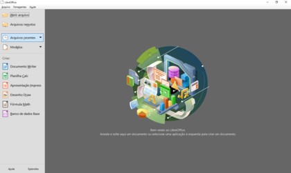
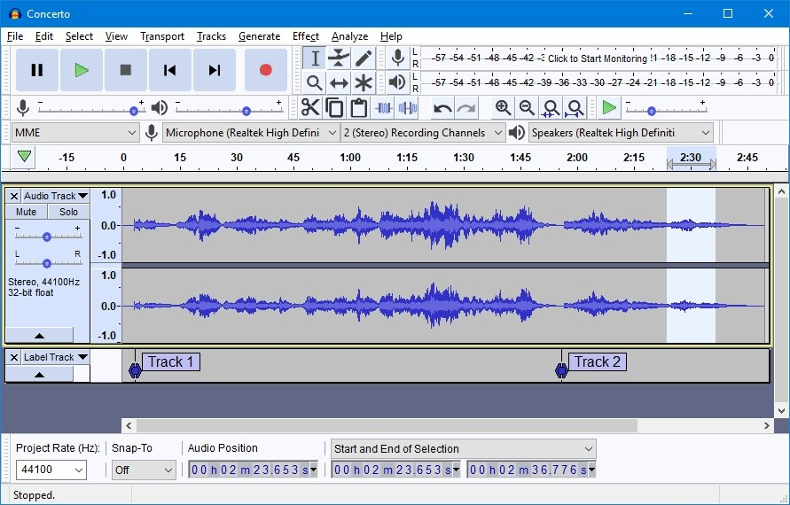

LAS HERRAMIENTAS MAS POPULARES.

GIMP
Editor de imágenes multiplataforma.
Discord
Una aplicacion de mensajería disponibles orientadas a grupos.

LibreOffice
Paquete de oficina interfaz limpia con potentes herramientas.

Audacity
Multiplataforma libre que se puede usar para grabación y edición de audio.